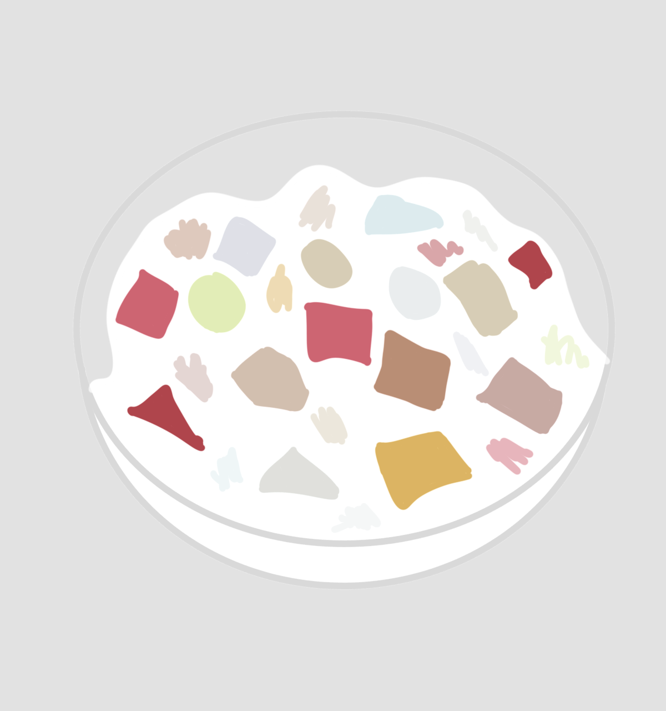

Fruit Salad
Good for 8-10

Ingredients
- 1 can fruit cocktail in light syrup (796 ml)
- 2 cups heavy whipping cream
- 3 tbsp sweetened condensed milk (add more if you want it sweeter)
- 1 bottle nata de coco (coconut gel)
- 1 bottle coconut strings
- Optional: ¼ cup cheese (cut into small squares)
Instructions
- Using a strainer, drain the fruit cocktail. Set aside.
- In a large bowl, combine heavy whipping cream and condensed milk.
- Using a hand mixer, whisk until soft peaks form.
- Add the fruit cocktail. Mix.
- Add nata de coco (coconut gel) and coconut strings. Mix.
- Optional: Mix in the cheese.
- Refrigerate or chill at least four hours. Serve cold.